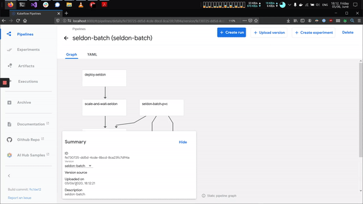

This page was generated from examples/batch/kubeflow-pipelines-batch/README.ipynb.
Batch processing with Kubeflow Pipelines¶
In this notebook we will dive into how you can run batch processing with Kubeflow Pipelines and Seldon Core.
Dependencies: * Seldon core installed as per the docs with Istio Ingress * Kubeflow Pipelines installed (installation instructions in this notebook)

Kubeflow Pipelines Setup¶
Setup the pipeline in your current cluster:
[ ]:
%%bash
export PIPELINE_VERSION=0.5.1
kubectl apply -k github.com/kubeflow/pipelines/manifests/kustomize/cluster-scoped-resources?ref=$PIPELINE_VERSION
kubectl wait --for condition=established --timeout=60s crd/applications.app.k8s.io
kubectl apply -k github.com/kubeflow/pipelines/manifests/kustomize/env/dev?ref=$PIPELINE_VERSION
We also install the Python Library so we can create our pipeline:
[ ]:
pip install kfp==0.5.1
Add Batch Data¶
In order to run our batch job we will need to create some batch data that can be used to process.
This batch dataset will be pushed to a minio instance so it can be downloaded from Minio (which we need to install first)
Install Minio¶
[ ]:
%%bash
helm install minio stable/minio \
--set accessKey=minioadmin \
--set secretKey=minioadmin \
--set image.tag=RELEASE.2020-04-15T19-42-18Z
Forward the Minio port so you can access it¶
You can do this by runnning the following command in your terminal: kubectl port-forward svc/minio 9000:9000
Configure local minio client¶
[ ]:
!mc config host add minio-local http://localhost:9000 minioadmin minioadmin
Create some input for our model¶
We will create a file that will contain the inputs that will be sent to our model
[3]:
with open("assets/input-data.txt", "w") as f:
for i in range(10000):
f.write("[[1, 2, 3, 4]]\n")
Check the contents of the file
[4]:
!wc -l assets/input-data.txt
!head assets/input-data.txt
10000 assets/input-data.txt
[[1, 2, 3, 4]]
[[1, 2, 3, 4]]
[[1, 2, 3, 4]]
[[1, 2, 3, 4]]
[[1, 2, 3, 4]]
[[1, 2, 3, 4]]
[[1, 2, 3, 4]]
[[1, 2, 3, 4]]
[[1, 2, 3, 4]]
[[1, 2, 3, 4]]
Upload the file to our minio¶
[ ]:
!mc mb minio-local/data
!mc cp assets/input-data.txt minio-local/data/
Create Kubeflow Pipeline¶
We are now able to create a kubeflow pipeline that will allow us to enter the batch parameters through the UI.
We will also be able to add extra steps that will download the data from a Minio client.
[ ]:
mkdir -p assets/
We use the pipeline syntax to create the kubeflow pipeline, as outlined below:
[40]:
%%writefile assets/seldon-batch-pipeline.py
import kfp.dsl as dsl
import yaml
from kubernetes import client as k8s
@dsl.pipeline(
name='SeldonBatch',
description='A batch processing pipeline for seldon models'
)
def nlp_pipeline(
namespace="kubeflow",
seldon_server="SKLEARN_SERVER",
model_path="gs://seldon-models/v1.14.0/sklearn/iris",
gateway_endpoint="istio-ingressgateway.istio-system.svc.cluster.local",
retries=3,
replicas=10,
workers=100,
input_path="data/input-data.txt",
output_path="data/output-data.txt"):
"""
Pipeline
"""
vop = dsl.VolumeOp(
name='seldon-batch-pvc',
resource_name="seldon-batch-pvc",
modes=dsl.VOLUME_MODE_RWO,
size="2Mi"
)
seldon_deployment_yaml = f"""
apiVersion: machinelearning.seldon.io/v1
kind: SeldonDeployment
metadata:
name: "{{{{workflow.name}}}}"
namespace: "{namespace}"
spec:
name: "{{{{workflow.name}}}}"
predictors:
- graph:
children: []
implementation: "{seldon_server}"
modelUri: "{model_path}"
name: classifier
name: default
"""
deploy_step = dsl.ResourceOp(
name="deploy_seldon",
action="create",
k8s_resource=yaml.safe_load(seldon_deployment_yaml))
scale_and_wait = dsl.ContainerOp(
name="scale_and_wait_seldon",
image="bitnami/kubectl:1.17",
command="bash",
arguments=[
"-c",
f"sleep 10 && kubectl scale --namespace {namespace} --replicas={replicas} sdep/{{{{workflow.name}}}} && sleep 2 && kubectl rollout status deploy/$(kubectl get deploy -l seldon-deployment-id={{{{workflow.name}}}} -o jsonpath='{{.items[0].metadata.name'}})"
])
download_from_object_store = dsl.ContainerOp(
name="download-from-object-store",
image="minio/mc:RELEASE.2020-04-17T08-55-48Z",
command="sh",
arguments=[
"-c",
f"mc config host add minio-local http://minio.default.svc.cluster.local:9000 minioadmin minioadmin && mc cp minio-local/{input_path} /assets/input-data.txt"
],
pvolumes={ "/assets": vop.volume })
batch_process_step = dsl.ContainerOp(
name='data_downloader',
image='seldonio/seldon-core-s2i-python37:1.14.0 command="seldon-batch-processor",
arguments=[
"--deployment-name", "{{workflow.name}}",
"--namespace", namespace,
"--host", gateway_endpoint,
"--retries", retries,
"--input-data-path", "/assets/input-data.txt",
"--output-data-path", "/assets/output-data.txt",
"--benchmark"
],
pvolumes={ "/assets": vop.volume }
)
upload_to_object_store = dsl.ContainerOp(
name="upload-to-object-store",
image="minio/mc:RELEASE.2020-04-17T08-55-48Z",
command="sh",
arguments=[
"-c",
f"mc config host add minio-local http://minio.default.svc.cluster.local:9000 minioadmin minioadmin && mc cp /assets/output-data.txt minio-local/{output_path}"
],
pvolumes={ "/assets": vop.volume })
delete_step = dsl.ResourceOp(
name="delete_seldon",
action="delete",
k8s_resource=yaml.safe_load(seldon_deployment_yaml))
scale_and_wait.after(deploy_step)
download_from_object_store.after(scale_and_wait)
batch_process_step.after(download_from_object_store)
upload_to_object_store.after(batch_process_step)
delete_step.after(upload_to_object_store)
if __name__ == '__main__':
import kfp.compiler as compiler
compiler.Compiler().compile(nlp_pipeline, __file__ + '.tar.gz')
Overwriting assets/seldon-batch-pipeline.py
Trigger the creation¶
We will run the python file which triggers the creation of the pipeline that we can the upload on the UI:
[41]:
!python assets/seldon-batch-pipeline.py
/home/alejandro/miniconda3/lib/python3.7/site-packages/kfp/components/_data_passing.py:168: UserWarning: Missing type name was inferred as "Integer" based on the value "3".
warnings.warn('Missing type name was inferred as "{}" based on the value "{}".'.format(type_name, str(value)))
/home/alejandro/miniconda3/lib/python3.7/site-packages/kfp/components/_data_passing.py:168: UserWarning: Missing type name was inferred as "Integer" based on the value "10".
warnings.warn('Missing type name was inferred as "{}" based on the value "{}".'.format(type_name, str(value)))
/home/alejandro/miniconda3/lib/python3.7/site-packages/kfp/components/_data_passing.py:168: UserWarning: Missing type name was inferred as "Integer" based on the value "100".
warnings.warn('Missing type name was inferred as "{}" based on the value "{}".'.format(type_name, str(value)))
Check the pipeline has been created:
[42]:
!ls assets/
input-data.txt seldon-batch-pipeline.py.tar.gz
kubeflow-pipeline.jpg seldon-kubeflow-batch.gif
seldon-batch-pipeline.py
Open the Kubeflow Pipelines UI¶
We can now open the UI by port forwarding the UI with the following command:
kubectl port-forward svc/ml-pipeline-ui -n kubeflow 8000:80
And we can open it locally in our browser via http://localhost:8000
Now we can follow the standard steps to create and deploy the kubeflow pipline

[ ]: